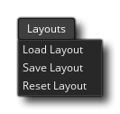

Este menú está relacionado con guardar y cargar diferentes diseños IDE. Puede configurar el IDE como lo desee, con ciertos elementos (como el Árbol de recursos o el Windows de salida) dispuestos de forma diferente al predeterminado. Esto le permite configurar GameMaker Studio 2 para adaptarlo a su flujo de trabajo y con las opciones de este menú puede guardar los diseños de proyectos actuales como un *.xml archivo que luego se puede cargar en cualquier proyecto para configurar los diseños para que sean los mismos. Las opciones en este menú son las siguientes:
- Cargar diseño - Esto abrirá un explorador de archivos donde puede seleccionar un diseño previamente guardado *.xml archivo para cargar
- Guardar diseño: abrirá un explorador de archivos donde podrá nombrar y guardar el diseño de IDE actual como un *.xml archivo.
- Restablecer diseño: restablecerá el diseño del IDE actual a la configuración predeterminada.